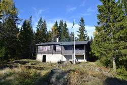
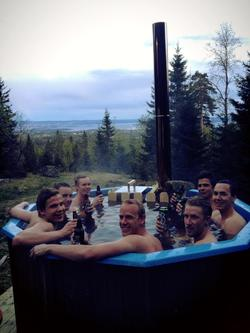

Småbruket studenthytte

VIKTIG INFORMASJON:
Vi har problemer med brønnen som medfører at
leietakere må hente vann fra Turishytten, Brunkollen (700 meter unna).
Vi beklager ulempen. Vi jobber iherdig med å fikse brønnen.
Småbruket er en tømmerhytte som ligger
vakkert til midt i Bærumsmarka og eies av Foreningen Blindern
Studenterhjem. Den er omkranset
av gode tur- og skimuligheter som kan gi flotte naturopplevelser.
For dem som trives best inne, varmer peisen i den
store stua, mens badstuen gjør seg klar i kjelleren.
Det er et godt utstyrt kjøkken som gir gode matlagingsmuligheter.
Småbruket passer til kollokvieturer, rekreasjon,
klasseturer og til alle som ønsker et avbrekk
fra byens mas og jag. En meget stor stue gjør muligheter for mange
ulike aktiviteter.
Hytta leies ut til studentforeninger, kollokviegrupper, bedrifter,
vennegjenger og andre.
Fasiliteter

- 24 sengeplasser og hems med madrasser (senger/madrasser til 34 personer, er dog plass til flere)
- Stor stue med peis og ovn
- Brettspill, kort, gitar og stereoanlegg
- Flott kjøkken (oppført i 2007) med stort kjøleskap, komfyr, visp, kaffemaskin, vannkokere, mye servise, og det du ellers skulle trenge for å lage et gourmetmåltid
- Vedfyrt badstue og 2 dusjer
- Utendørs vannkran åpen året rundt
- Utedo (ny og fin snurredass 2017)
- Bålplass og sittegruppe ute med flott utsikt over Oslofjorden
- Utendørs badestamp (må forhåndsavtales, ekstra kostnad kr 1 000 som må forhåndsbetales som ekstra depositum)
Beliggenhet og ankomstmuligheter
- Sommerløype
- Se kart nedenfor for anbefalte løyper. Trykk på løypen for beskrivelse.
- Vintertraseer
- Se https://www.skiforeningen.no/marka/kart/ for oppkjørte skiløyper. Hytta ligger like ved Brunkollen - se kartet under for posisjon. Den store grusveien fra Fossum til Brunkollen er også måkt og kan brukes som gangvei.
- Kjøretillatelse
- Det er ikke anledning å kjøre bil frem til hytta/Brunkollen. Nærmeste parkering er angitt på kartet nedenfor. Løvenskiold Skog innvilger dessverre ikke kjøretillatelser på veiene til leietakere.
Vis Småbruket i et større kart
Leie Småbruket
Priser for leie av Småbruket
- Minstepris:
- Per døgn til en hverdag: kr 500
- Per døgn til en helgdag: kr 1 000
- Vedforbruk regnes utenom minsteprisen
- Per person SiO-medlem: kr 130 per natt
- Per person andre: kr 160 per natt
- Per vedsekk: kr 130
For beboere ved Blindern Studenterhjem gjelder egne priser. Gamle beboere (GB-ere) ved studenterhjemmet får pris tilsvarende SiO-medlemmer.
Tidsbestemmelser
Man kan oppholde seg på Småbruket frem til senest kl 14. Småbruket er tilgjengelig for leie fra kl 15. Det kan om mulig avtales andre tidspunkter ved spesielle behov.
Reservasjonsdepositum
Et reservasjonsdepositum tilsvarende minstepris må betales
senest en uke etter reservering av hytta. Du har da
gjort endelig reservering. Dette må være innbetalt før nøkkel kan hentes. Ved
reservasjoner rett før utleiedato kan depositumet evt. betales kontant ved henting av nøkkel.
Vis flere bestemmelser om depositumet
- Betalingsfrist
- Betales ikke depositum innen 7 dager vil reservasjonen bli strøket for å gi andre muligheten til å betale leie til de aktuelle datoene.
Vi gir beskjed hvis vi stryker en reservasjon.
- Innbetalingsdetaljer
- Depositumet innbetales til kontonr. 6094.05.44834 etter at reservasjon er bekreftet av oss. Merkes navn og utleiedato.
- Refundering/avlysning
- Hvis utleien avlyses når det er under 14 dager før utleie vil ikke depositumet bli refundert.
- Depositumet refunderes etter innbetalt leie. Normalt trekker vi depositumet fra totalbeløpet.
Henting av nøkkel og kontrakt
Senest en uke før avreise tar du kontakt med utleieansvarlig for å
avtale overlevering av nøkkel, samt skrive under en leiekontrakt.
Etter turen tar du kontakt med utleieansvarlig for å levere tilbake nøkkel.
Du må også opplyse hvor mange personer som brukte hytta samt hvor mange vedsekker som er brukt.
Avtalt tidspunkt må være mellom kl 17 og kl 19 onsdager.
Se leiekontrakt
(Vi har kontrakter liggende klare, så du trenger ikke å ta med.)
Pakkeliste
For hver enkelt:
- Gode sko
- Sovepose (Det er ikke dyner på hytta.)
- Skift og varme klær
- Drikke (Men er vann på hytta)
- Evt. vann på turen opp
- Håndkle (Dusj/badstue på hytta)
- Toalettmappe
Annet som kan komme nyttig med:
- Hodelykt
- Mobillader
- T-banekort og penger (Brunkollen Turisthytte har automatsalg av diverse godsaker og av og til utsalg av mat.)
For gruppa:
- Nøkkelen til hytta!
- Mat/snacks for turen
Ting det ofte er på hytta, men som kan være greit å ta med hvis man vil være sikker:
- Telyst/stearinlys o.l.
- Fyrstikker
Ofte stilte spørsmål
- Er det strøm på hytta?
- Ja, det er strøm i hele hytta, også i annekset.
- Er det innlagt vann?
- Nei, men det er borrebrønn rett utenfor hytteveggen med vannpumpe som tilbud vann både sommer og vinter.
Om vinteren kan man oppleve at denne har fryst, men da er det kun nødvendig å smelte snø og helle
kokende vann over røret som kommer opp av bakken.
- Må vi ta med egen ved?
- Det er masse ved i kjelleren på hytta, så dette skal ikke være nødvendig. Vedsekkene er 60-liters sekker.
- Hvor lang tid tar det å gå opp til hytta?
- Fra Skytterkollen kan man regne ca. 40-60 minutter om sommeren.
Fra Ila (der bussen stopper) til Skytterkollen tar det ca. 10 minutter.
Om vinteren bør man beregne mer tid - kanskje opp mot 2 timer dersom
det er mørkt, mye nysnø, is på bakken og andre mer krevende forhold.
- Hvordan kommer vi oss til Skytterkollen fra Ila?
- Fra buss-stoppen skal man gå opp mot høyre side av fengselet. Før man
kommer til idrettsbanen der skal man krysse rett gjennom skogen oppover,
helt til man kommer til en vei. Der skal man følge veien til venstre til
man kommer til parkeringsplassen (som er Skytterkollen). Stien man skal følge
derfra begynner på venstr side rett før man ankommer parkeringsplassen.
- Hvor mange kan man være på hytta?
- Selv om det kun er 34 "offisielle" soveplasser, er det fremdeles et par ekstra madrasser, sofa i stua og mulig å sove på gulvet. Vi har vært over 50 stk til overnatting på arrangert tur.
- Trenger vi ta med toalettpapir?
- Nei, dette skal det være masse av på hytta. Skulle det være tomt i boden, ring hyttestyret så sier vi hvor dere finner mer.
- Hva slags kjøkkenmaskiner er det på hytta?
- Hytta er utstyrt med ovn, kokeplater og kjøleskap. I tillegg er det visp, kaffemaskin og vannkokere. Det er dessverre ikke fryser eller oppvaskmaskin (ikke innlagt vann).
Ledige datoer for utleie
Her er en oversikt som viser hvilke dager hytta er reservert/utleid.
- Reservert: Vi har ikke mottatt depositum fra leietaker.
- Reservert av hyttestyret: Hyttestyret holder av flere helger før fastsettelse av dato for egne arrangementer. Sannsynligvis blir kun ett alternativ beholdt.
- Reservert for beboere: Datoene holdes av for beboere ved Blindern Studenterhjem. Beboere tar kontakt med hyttestyret for å reservere utleie. Datoene blir ikke frigjort for andre interessenter.
- Opptatt: Depositum er mottatt. Leien kan fremdeles bli avlyst.
Kontakt oss
Dersom du er interessert i å leie Småbruket, eller har andre henvendelser, kontakt oss gjerne på e-post.
Alle reservasjoner må sendes per e-post.
- E-post
- Send helst e-post med mindre det haster
- hyttestyret@gmail.com
- Utleiesjefer
- Ida Wikøren, 483 54 970
- Peter Schage, 474 51 631
- Hyttesjef
- Mathias Løland Velle, 412 14 541
Hyttestyret for Småbruket
Foreningen Blindern Studenterhjem
Rediger på GitHub